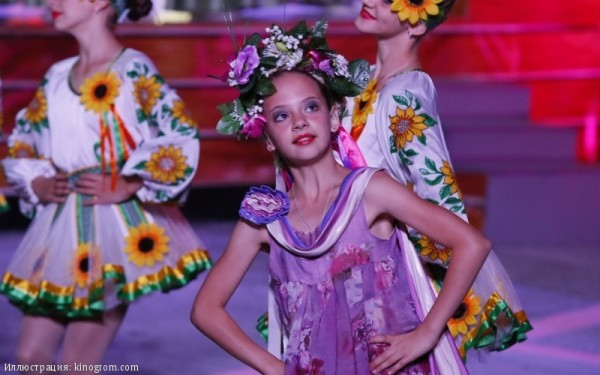
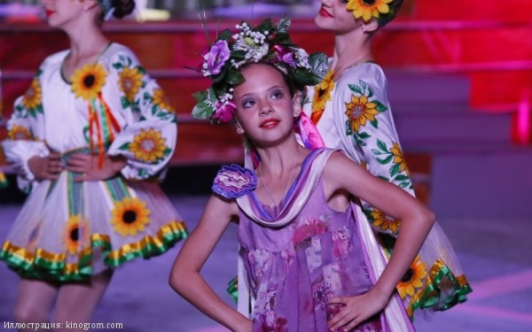

В Крыму прошел 24-й международный детский кинофестиваль
 

В этом году фестиваль детского кино «Алые паруса «Артека» приурочен к двум юбилейным датам: 80 лет исполняется студии «Союзмультфильм» и 45 — знаменитой картине «Офицеры».
Церемония открытия собрала на трибунах детей всех восьми лагерей международного детского центра «Артек». На сцену поднялись известные актеры, режиссеры, продюсеры: Наталья Гвоздикова, Александр Домогаров, Нонна Гришаева, Александр Иншаков и многие другие.
Всех встречали громкими аплодисментами, но настоящей овации был удостоен президент кинофестиваля Василий Лановой. Народный артист СССР поднялся на сцену последним, чтобы поздравить артековцев с открытием фестиваля и зачитать приветствие от президента Владимира Путина.
Фестиваль «Алые паруса Артека» уже 23 года проходит в Международном детском центре «Артек» в Крыму, 5 лет — в Болгарии, 3 года в Черногории. Главными целями кинофорума стали сохранение национальной культуры и популяризация отечественного киноискусства, а также нравственное и эстетическое воспитание подрастающего поколения на примерах лучших достижений современного детского кинематографа.
При реализации проекта используются средства государственной поддержки, выделенные в качестве гранта в соответствии с распоряжением президента Российской Федерации от 01.04.2015 г. № 79-рп и на основании конкурса, проведенного обществом «Знание» России.